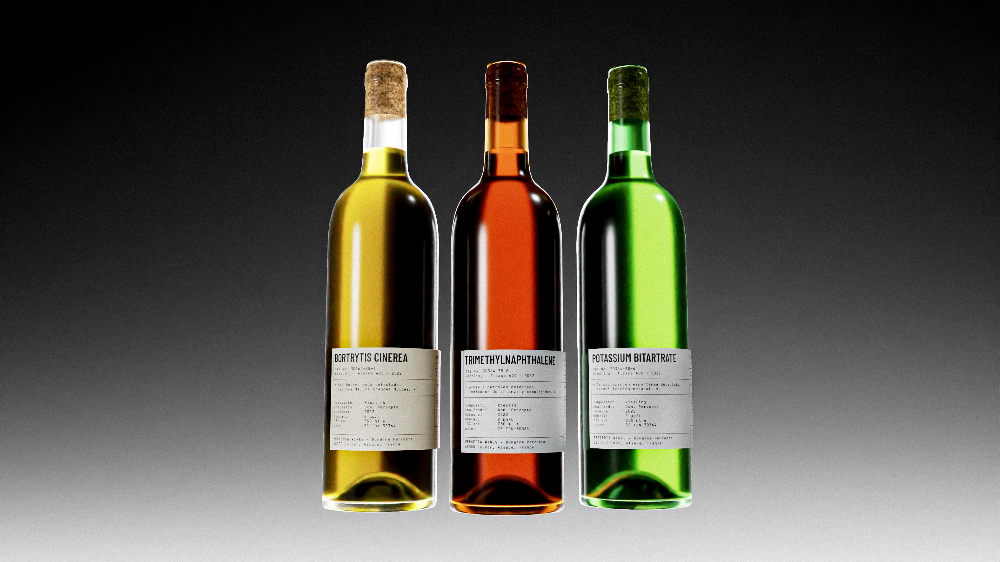
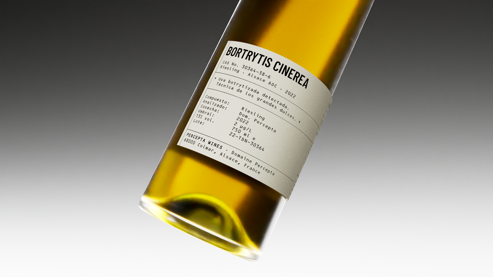
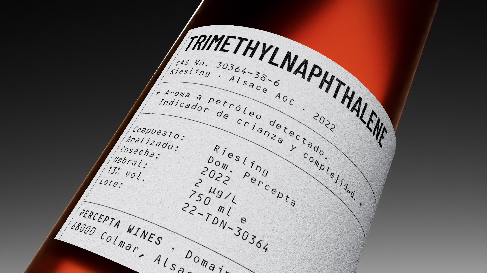
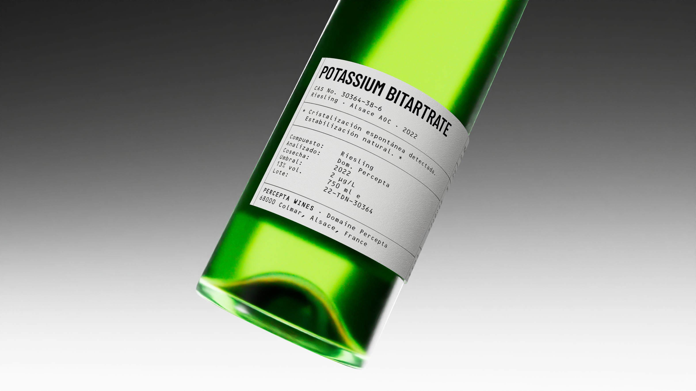
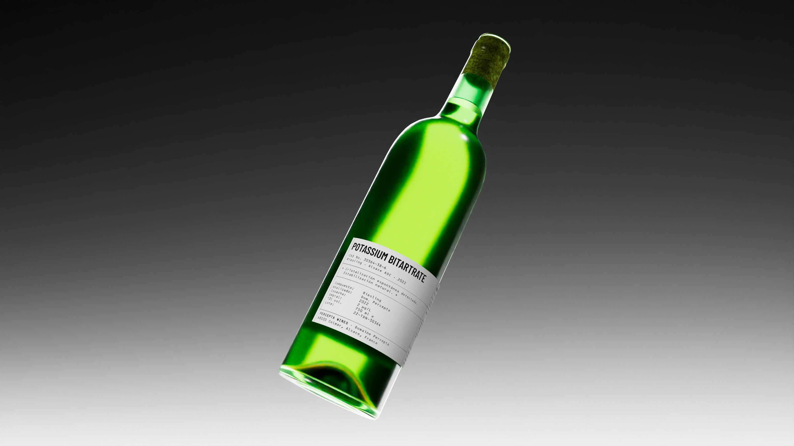
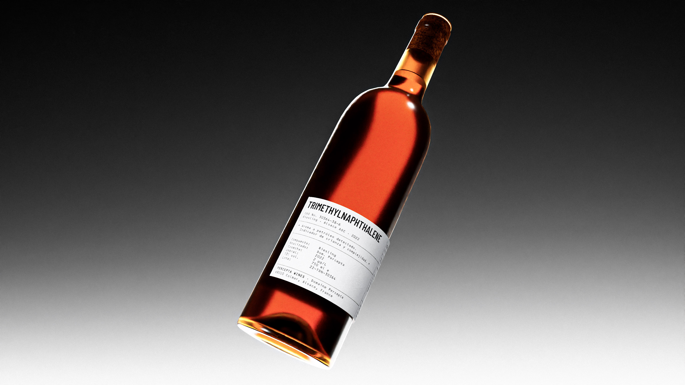

Percepta Wines
A wine label concept where the winery's name, from the Latin percepta (raw sensory data before it becomes meaning), sets the tone for three labels, each built around a real winemaking phenomenon: the petrol aroma of aged Riesling, the tartrate crystals in cold-stored whites, and the noble rot behind the great sweet wines. Technical truth, stated plainly, becomes the aesthetic.
Packaging · Branding · 3D Modelling- Role
- Packaging design, branding
- Field
- Packaging · Branding · 3D Modelling
- Client
- Percepta Wines (personal project)



Each label reads like a warning, not a decoration: the same
instinct that makes people distrust these traits turned into
the whole point of the design.



More projects
Simbiosis, identity, music and 3D for a cultural mediation system.
Specimen, Laus Inbook 2026 award.
Outpaced, D&AD New Blood proposal for Monotype x Penguin.
Primal, 3D modeling and animation for New Balance.
Built Not Blessed, speculative Under Armour campaign for LA 2028.
Oakley Neptune, design without human supervision.
Percepta Wines, packaging and branding for a wine label concept.